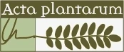

Archaeobotanical records
The publications listed in BRAIN are the bibliographic sources used to retrieve the archaeobotanical data in ARBOREA.
Browse the BRAIN reference listTrace the sources behind ARBOREA records, see how they are linked, and find the publications, contributors and licences for the project.
The publications listed in BRAIN are the bibliographic sources used to retrieve the archaeobotanical data in ARBOREA.
Browse the BRAIN reference listWhere additional literature was used to document archaeological contexts, it is listed in the individual ARBOREA site records.
Explore site records in the WebGISSelect an entity to inspect its fields and links. The diagram shows the logical relationships used to trace a record back to its context and sources.
The archaeological complex that brings its contexts together.
One site may contain multiple archaeological contexts.
A site-focused dataset of plant macro-remains from Lucus Feroniae, published alongside bioarchaeological research on ancient Latium.
A georeferenced dataset and map of published archaeobotanical records of grapevine and olive.
Project lead
Sapienza University of Rome · Associate ProfessorScientific supervision
Sapienza University of Rome · Technical and Administrative StaffArchaeobotanical data collection and digitisation
Sapienza University of Rome · Research FellowArchaeological data collection and digitisation
Back-end and front-end development
Italian archaeobotanical database and source bibliography.

Botanical reference resource.
With thanks to Tiziana Babusci, Library Director at Sapienza University of Rome, for her support in bibliographic research.
| Component | Credits | Licence |
|---|---|---|
| Data model | Developed by Erasmo di Fonso | CC BY-NC 4.0 |
| Icons | Author-created and AI-generated assets | CC BY 4.0 |
| Archaeobotanical and archaeological data | Compiled by the scientific team from published sources | CC BY-SA 4.0 |
| Topographical data | Compiled by the scientific team from online and bibliographic sources | CC BY-SA 4.0 |
For third-party material and related projects, consult the licence and attribution requirements provided with the specific dataset or resource.